OTH–β: Hole-y Haven!
Instructor: Nathan KingCollaborative Project
Teammates: Mindy Ma, Tracy Tan
Tools & Technologies: Computational geometry scripts, Grasshopper, Rhino, custom generative rules, CNC milling, laser cutting, perforated fabrication techniques, layered materials, 1:1 body-scale prototyping
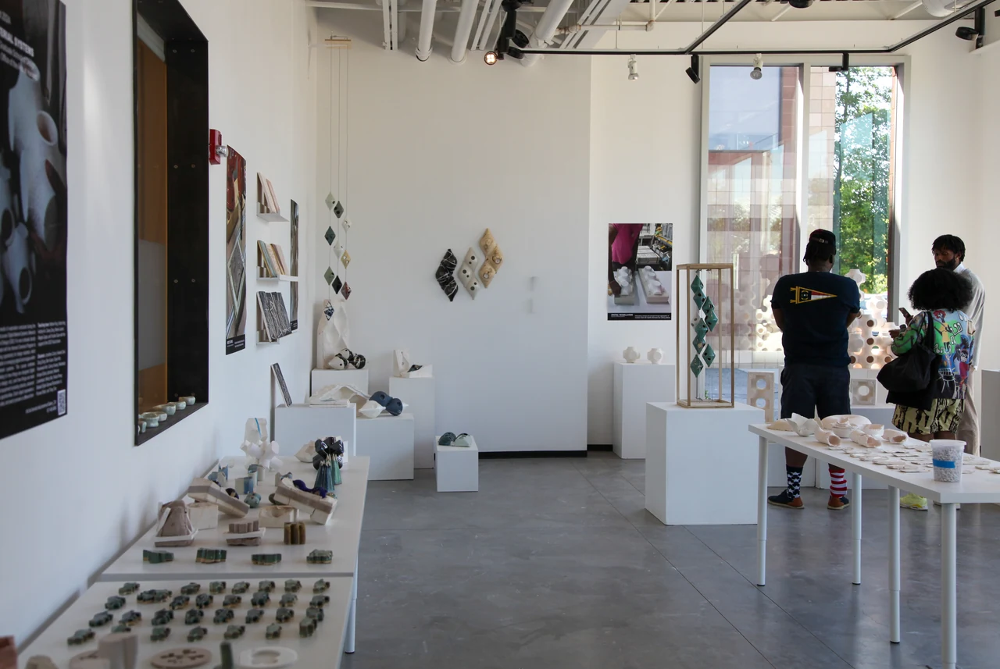
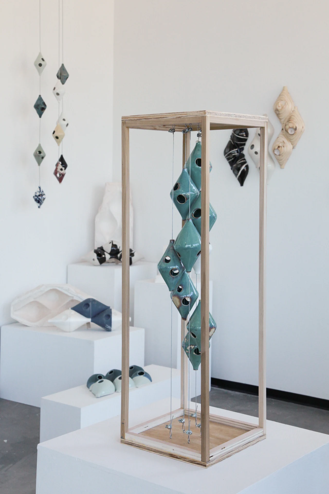
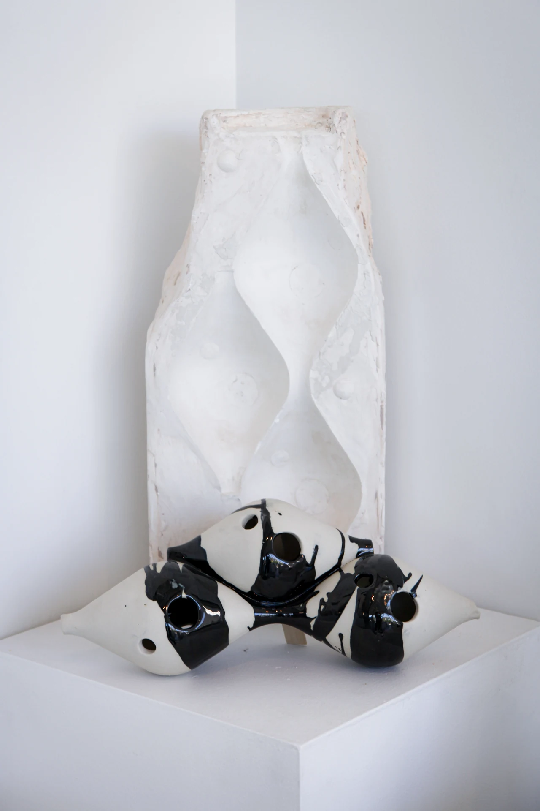
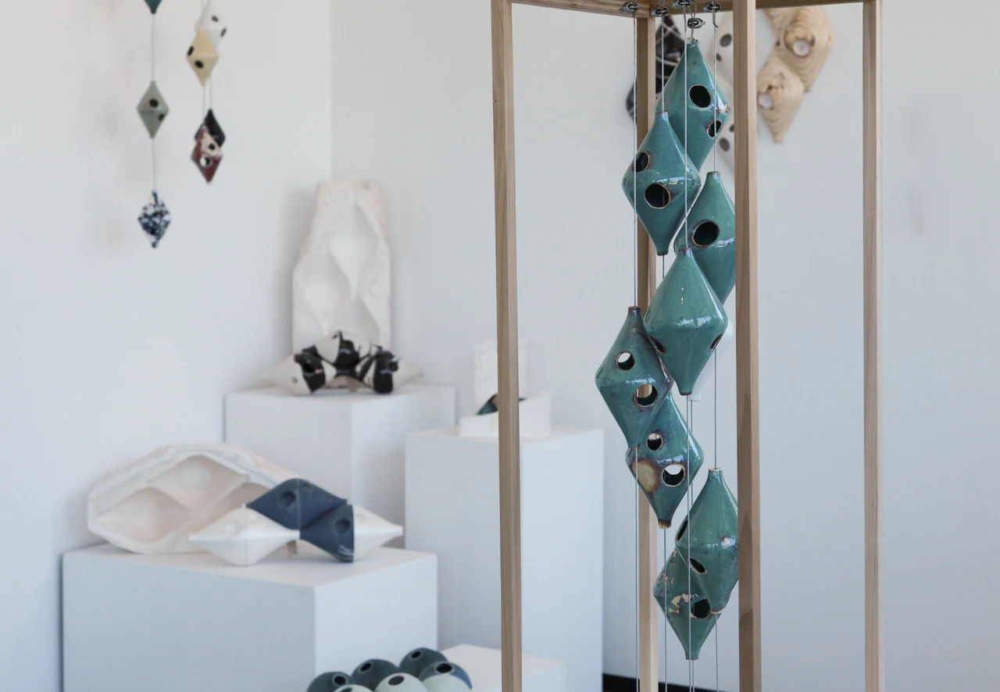
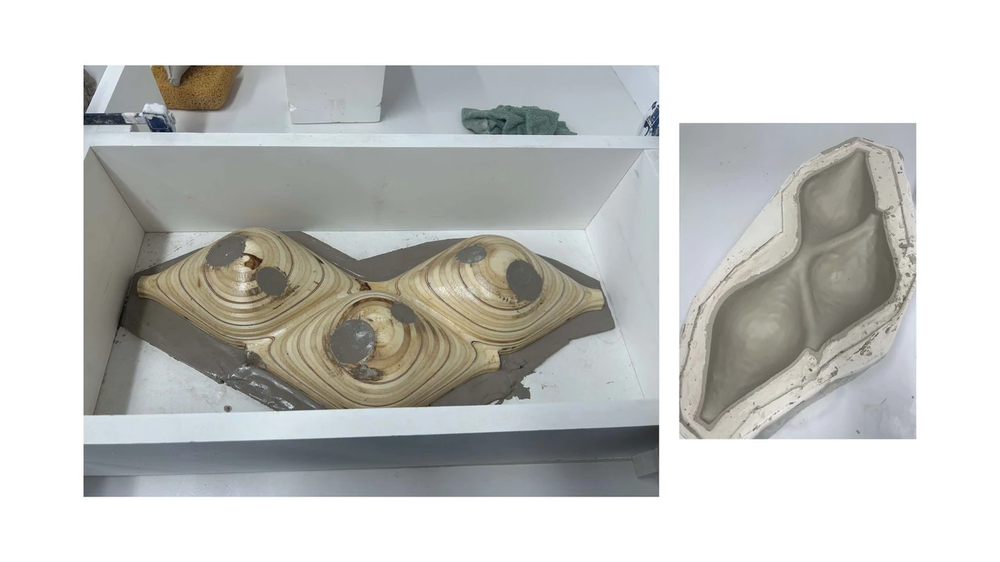
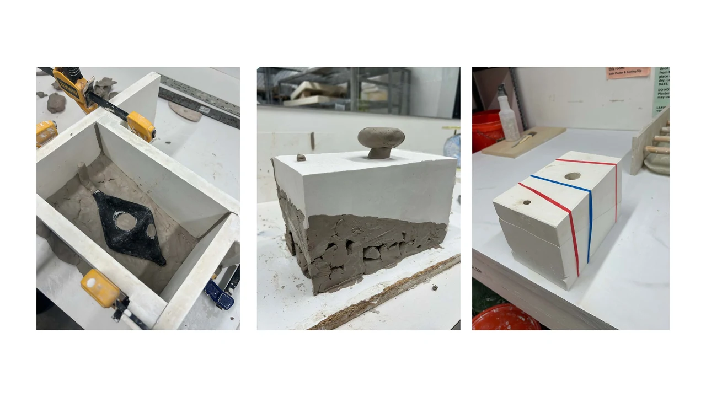
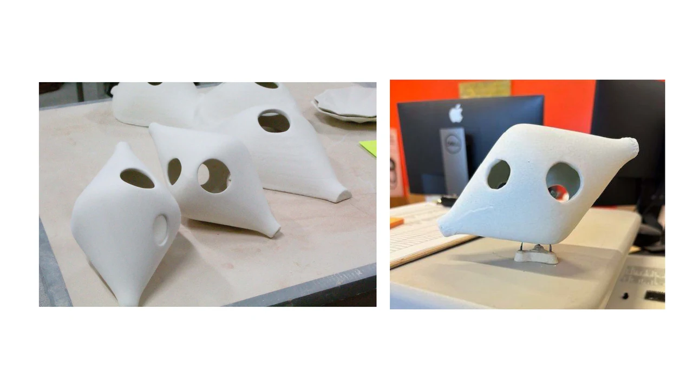
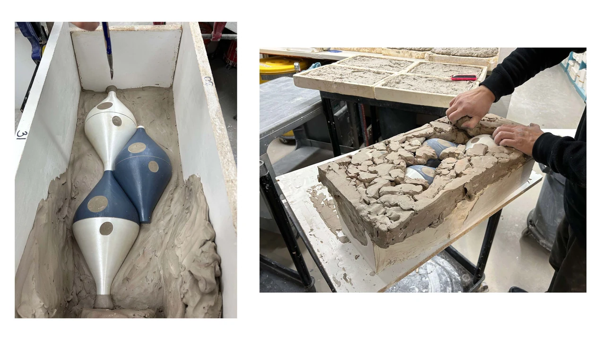
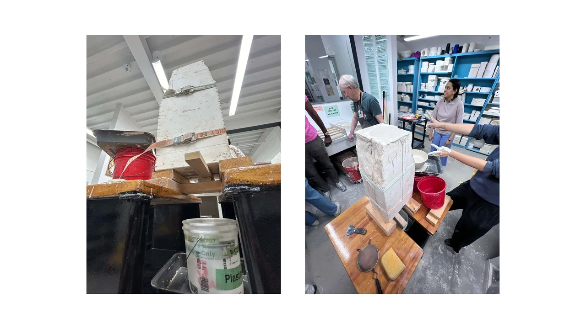
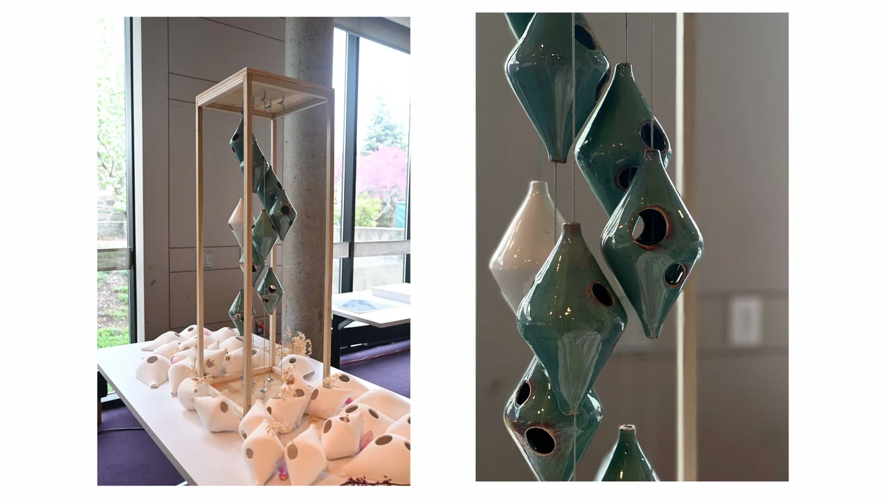
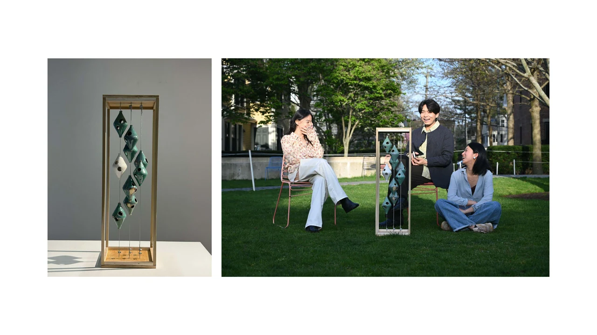
Many thanks to:
Harvard Ceramics Studio: Casey, Kathy, Megha, Geoff, Marek, Audrey